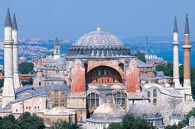
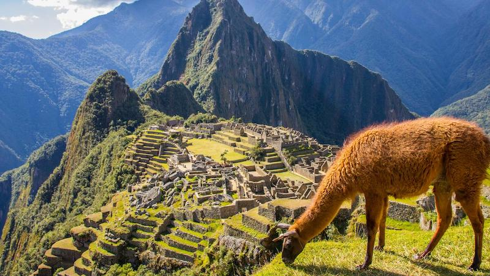

Tarihi Yerler
Dünya üzerinde ziyaret edilebilecek en önemli tarihi yerleri keşfedin.

Ayasofya
Ayasofya, Bizans ve Osmanlı dönemlerinin kesişim noktası olarak tarihi bir öneme sahiptir.

Machu Picchu
Peru'nun yüksek dağlarında yer alan bu kayıp şehir, İnka İmparatorluğu'nun etkileyici kalıntılarına ev sahipliği yapıyor.